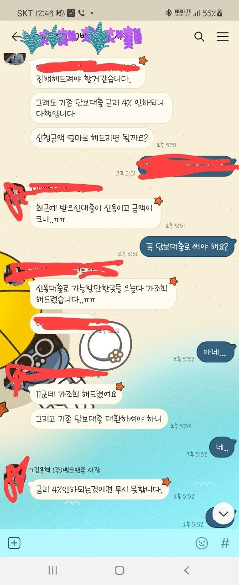

[ 주택담보대출] 김용혁 사장님 감사합니다.!!!
재직형태 : 정규직
재직기간 : 1년 5개월
사대보험 : 가입 유
연소득 : 2500
신용평점 : 541
기존 채무내역 : 담보대출2900,신용3900
필요서류 : 신분증,등본,초본,건강보험장기요양(납부확인서,득실확인서) 외 등등
기존의 담보대출건의 추가 제대출 문의 하려고 상담드렸었습니다.
항상 도움을 받고 있기 때문에 믿음이 가셔서 이분께 또 도움을 요청했어요.
기존의 대출건이 금리가 좀더 낮을걸로 추천해주셔서 다행이 이자율도 줄이고
원하는 만큼의 돈도 빌릴수가 있게 되었어요. 정말다행이지 뭐예요.
너무 감사드려요. 주택 담보대출을 다른대부의 이자율이 24%라 타 대부업 대출이
4% 도 저렴한걸로 안내해주시고 추가 제대출 해주셔서, 다행이예요,
바로 해결해주시고, 한 3-4일정도 걸려서 대출 승인 된것 같아요,
준비할 서류들도 많고 그랫거든요, 그래도 동사무소 딱 한번만 가면 해결되니, 잘 알려주시고 정말 감사합니다.
